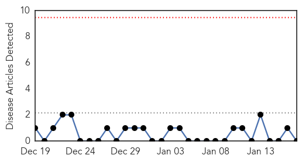
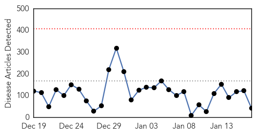
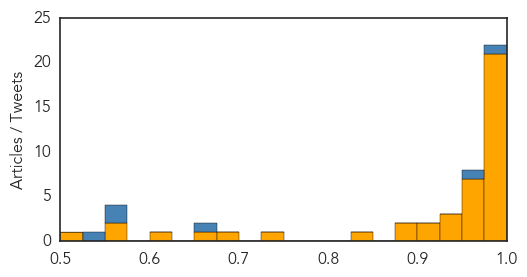

Pertussis
30-Day Web Trend
0 alerts, 0 warnings

30-Day Twitter Trend
0 alerts, 0 warnings

Article Locations

Article Confidences

Top Articles:
-
No articles found for Jan 17, 2015
Top Tweets:
-
No tweets found for Jan 17, 2015
Ebola
30-Day Web Trend
0 alerts, 0 warnings

30-Day Twitter Trend
0 alerts, 0 warnings

Article Locations
Article Confidences
Top Articles:
- 1.000
- All schools in Guinea that were closed amid Ebola to reopen on Monday
- 1.000
- Where We Are Now and What Happens Next
- 1.000
- Washington warns 'perfect storm' of conditions leaves Isis-controlled Iraq and Syria vulnerable to outbreaks of infectious disease
- 1.000
- Five people tested for deadly Ebola virus
- 1.000
- Schools in Guinea closed amid Ebola to reopen Monday
- 1.000
- Ebola scare sends two Sierra Leone volunteers into isolation at UK hospitals
- 0.999
- Guinea, Sierra Leone aim to be Ebola-free by mid-2015
- 0.999
- Volunteers transferred to UK following Ebola infection scare
- 0.999
- Nurse and the ‘disease of love’
- 0.999
- More Chinese military medics to help in Ebola fight
- 0.998
- Ebola spread slowing in hard-hit countries: WHO
- 0.997
- Support affected countries to control Ebola – Health Minister
- 0.994
- Redhill: Aid Worker Leaves Hospital
- 0.993
- Aid worker returning from Sierra Leone being monitored for Ebola at East Surrey Hospital
- 0.993
- Local health department monitored one person for Ebola
- 0.992
- Ebola treatment begins trials in Liberia
- 0.991
- West African leaders meet to assess impact of anti-Ebola campaign
- 0.991
- Schools Closed By Ebola Outbreak In Liberia Re-Open
- 0.988
- HIGH LEVEL COORDINATION MEETING OF ECOWAS PARTNERS (ECOWAS
- 0.984
- EU partners with pharmaceutical industry to fight Ebola
- 0.977
- Health officials warn flu season could get worse
- 0.959
- Liberia honours Ugandan doctor over Ebola fight
- 0.953
- The cost of halting a pandemic? $344 billion
- 0.951
- International Criminal Court launches war crimes investigation in Palestinian territories
- 0.951
- Lack of Christmas crowds prompts full retreat from Canada for Target
- 0.951
- Easing of travel restrictions opens up Cuba to US airlines
- 0.951
- Ebola Recovery Assessment Mission Kicks Off in Sierra Leone
- 0.951
- Police sweeps across Europe and arrest dozens of terror suspects
- 0.946
- Australian nurse flown to UK to be monitored for Ebola
- 0.943
- EU research efforts at front line of fight against Ebola
- 0.938
- Chinese Ebola Aid Workers Return from Liberia
- 0.921
- Sudan Vision Daily
- 0.908
- January 26, 2015 -- Medical brigades in Haiti: 16 years of Cuban internationalist solidarity
- 0.880
- Young U.S Nurse Decides to Fight Against Ebola
- 0.879
- Johnson & Johnson forms Consortium to boost Efforts to develop Ebola Vaccine
- 0.833
- Five wars poised to define peace, security in East Africa in 2015
- 0.731
- Sierra Leone troops leave Somalia
- 0.678
- Study of experimental Ebola drug ZMapp could start next month
- 0.659
- Healthcare workers rush out of Ebola Africa, but a nurse rushes in
- 0.608
- Faces of Ebola Heroes on Display in Beacon
- 0.558
- NPA generates US$26.5 Million
- 0.555
- Russian Aluminum Giant RUSAL Opens Hospital for Ebola Patients in Guinea
- 0.524
- UK minister impressed by S/ Leone's progress in fighting Ebola
Top Tweets:
- 0.990
- Ebola Update: 21329 confirmed probable & suspected cases of Ebola in 3 most affected countries with 8444 deaths. EbolaResponse
- 0.965
- is looking for drs nurses & pharmacists to work 6-8 week blocks on ebola treatment trials in W Africa. Email ebola@ndm.ox.ac.uk
- 0.656
- [CBC] Ebola outbreak: Red Cross nurse dies in Sierra Leone http://t.co/7kXlbS3z4B EBOLANEWS
- 0.568
- [BBC] Number of new cases of Ebola in West Africa is falling http://t.co/xRMTEL7BNS EBOLANEWS
- 0.567
- [JOBSERVER] 8 from Ebola-affected countries quarantined 7 released – Health Ministry http://t.co/mMjbzb4V35 EBOLANEWS
- 0.540
- [THESTAR] Ebola takes its toll on mental health in Sierra Leone http://t.co/XirMw0SEc9 EBOLANEWS